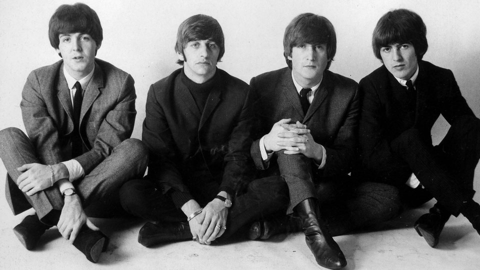

Битлз; также группу называют «Ливерпульской четвёркой» (англ. Liverpool Four), отдельно участников ансамбля называют «битлами»; в английском языке также распространено упоминание группы как Fab Four — «Великолепная четвёрка») — британская рок-группа из Ливерпуля, основанная в 1960 году, в составе которой играли Джон Леннон, Пол Маккартни, Джордж Харрисон и Ринго Старр. Также в разное время в составе группы выступали Стюарт Сатклифф, Пит Бест и Джимми Никол. Большинство композиций The Beatles созданы в соавторстве и подписаны именами Джона Леннона и Пола Маккартни. Дискография группы включает 13 официальных студийных альбомов, изданных в 1963—1970 годах, и 211 песен.
Начав с подражания классикам американского рок-н-ролла 1950-х годов, The Beatles пришли к собственному стилю и звучанию. The Beatles оказали значительное влияние на рок-музыку и признаются специалистами одной из наиболее успешных групп XX века, как в творческом, так и в коммерческом смысле. Многие известные рок-музыканты признают, что стали таковыми под влиянием песен The Beatles. С момента выпуска сингла «Please Please Me/Ask Me Why» в 1963 году группа начала восхождение к успеху, породив своим творчеством глобальное явление — битломанию. Четвёрка стала первой британской группой, пластинки которой завоевали популярность и первые места в хит-парадах США, и с неё началось всемирное признание британских коллективов, а также «ливерпульского» (мерсибит) звучания рок-музыки. Музыкантам группы и их продюсеру и звукорежиссёру Джорджу Мартину принадлежат новаторские разработки в области звукозаписи, комбинирования различных стилей, включая симфоническую и психоделическую музыку, а также съёмок видеоклипов. Журнал Rolling Stone поставил The Beatles на первое место в списке величайших исполнителей всех времён. В списке «500 величайших альбомов всех времён по версии журнала Rolling Stone» первое место занимает альбом Sgt. Pepper’s Lonely Hearts Club Band. Группа завоевала десять наград «Грэмми». Вся четвёрка, в знак признания заслуг перед страной, награждена орденами Британской империи (MBE). По состоянию на 2001 год только в США было продано свыше 163 миллионов дисков группы. Общий объём продаж единиц медиаконтента (диски и кассеты), связанного с группой, на этот момент превысил один миллиард экземпляров[9]. The Beatles прекратили совместную работу в 1970 году, хотя уже по меньшей мере с 1967 года Пол и Джон вели собственные проекты. После распада каждый из музыкантов продолжил сольную карьеру. В 1980 году возле своего дома в Нью-Йорке был убит Джон Леннон, в 2001 году от рака скончался Джордж Харрисон. Пол Маккартни и Ринго Старр продолжают заниматься творчеством и пишут музыку.